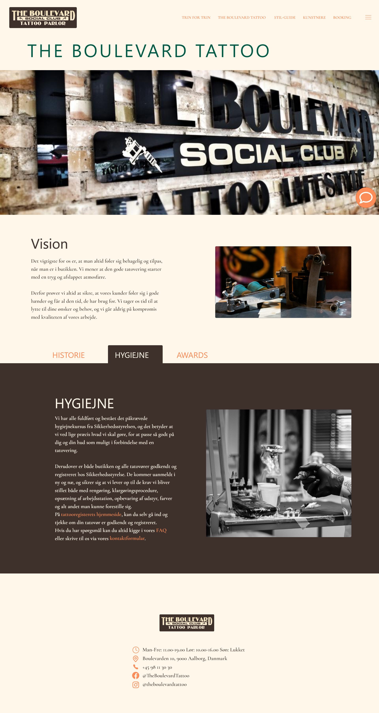
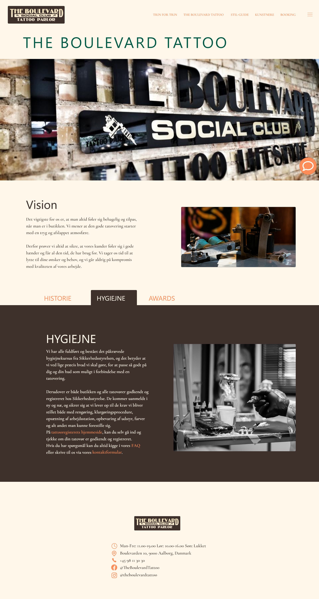

UI Design
Min gruppe og jeg brugte Googles design sprint til at skabe de første produkt-skitser, hvor vi over fire dage fokuserede på ét område dagligt og endte med et færdigt mockup.
Skitserne er udviklet baseret på bruger- og kundedata fra kvalitative undersøgelser og standarddata. Disse skitser er omsat til wireframes med fokus på genanvendelige komponenter i tråd med atomic design.
Efter wireframes laver vi high-fidelity mockups med farver, typografi og indhold fra styleguiden, så grænsefladen fremstår sammenhængende. Genanvendelige komponenter effektiviserer arbejdet på tværs af siderne.
Vi følger vores wireframe, men små justeringer kan føre til afvigelser i mockups. Hero sections skaber visuel vægt og tydeliggør siden for brugerne. Jakob Nielsens 10 usability-principper anvendes gennem hele grænsefladen.
 
